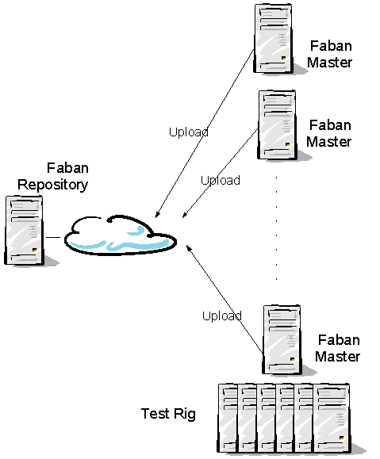

The repository is essentially a Faban master configured not to schedule, manage, or automate any runs, but to store results uploaded from different Faban masters and Faban rigs. Having a central repository allows us to store results in the long term and compare and contrast different results uploaded and replicated from different rigs, possibly with different hardware and/or software configurations. The upload feature allows users to store the important results to from these different rigs to the repository. The picture below shows a simple Repository configuration:

In the above picture we have one Repository (multiple allowed) and many Faban Masters. Results can be uploaded from any of these faban masters. The run to be uploaded to the server gets prepended with the hostname of the faban master to avoid the name conflicts for the runs from another faban master. If you are trying to upload the same run which is already present in the result server, a check is made based on the timestamp for the run. If the timestamps are same and there is no change in the description or tags, the upload is ignored. If they are different, then the run gets uploaded with the run name appended sequentially by hex 00 to FF.
The Faban repository/result server is configured in the following section of the harness.xml:
....On the Repository side you
need to set the runDaemon mode to disabled. It cannot submit runs.
The Faban repository/result server is configured in the following section of the harness.xml:
....On the Faban master side you
need to set the runDaemon mode to poller. Also, set the
repository/server to true and specify the proper repository url. The
master will use the provided repository URL as result server. You can
configure to use multiple result servers by setting repository/server to true for other
urls.